Habilidades del jugador
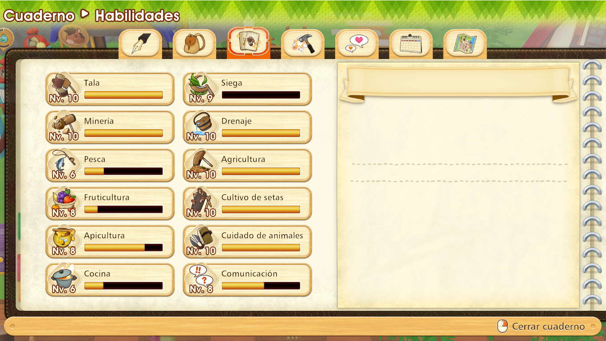
X
En el juego existe la función de habilidades los cuales son una mecánica en Story of Seasons: Pioneers of Olive Town basada en las actividades que realizas en el juego. A medida que realices tus actividades iras aumentando tus niveles de habilidad que estos a su vez te otorgaran grandes bonificaciones especiales las cuales mejorarán tus capacidades para realizar las actividades relacionadas con la habilidad.
Hay un total de 12 habilidades y muchas de ellas se desbloquean a medida que avanzas en el juego por ejemplo la habilidad de apicultura se desbloquea cuando el jugador logre reparar su primera colmena. Cada habilidad consta de un maximo de 10 niveles, cada nivel le otorga al jugador una mejora y tambien desbloquea una receta para la creacion de un objeto.
Lista de habilidades
X
Objetos de la Habilidad de Tala
"Utilice el hacha para talar árboles y tocones. La tala también producirá materiales de madera".
La tala se refiere a la capacidad del jugador de talar árboles y tocones, que luego cosechan troncos. Se incrementa usando el Hacha en árboles y tocones de tu granja. Tenga en cuenta que, aunque se desbloquearán árboles con mayor valor de experiencia en otras áreas de su granja, técnicamente puede maximizar su habilidad de tala mientras aún esté en el Área 1. Esta habilidad se desbloquea al comienzo del juego.
Nivel Titulo Tecnicas obtenibles Recetas obtenibles
01 Leñador novato —
Camino de madera
Valla de madera
Puerta de madera
02 Aprendiz de leñador Mejora ligera de la habilidad de talar. 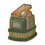
Procesadora de madera
03 Leñador principiante Talar consume menos energía. Caja de objeto de madera
04 Leñador con experiencia Consigues 1 material más al talar.
05 Leñador hábil Mejora moderada de la habilidad de talar.
Madera carbonizada
Grabado de oso
06 Leñador de renombre Talar consume mucho menos energía.
Banco de madera
Lámpara de escritorio elegante
07 Leñador superior Consigues 2 material más al talar.
Farola sencilla
Mesa pequeña
Mesa redonda pequeña
08 Maestro leñador Mejora enorme de la habilidad de talar.
Cajas de madera
09 Leñador extraordinario Aumento de los beneficios al enviar madera y troncos.
Cómoda cajonera
Mesa de pícni
10 Leñador legendario Consigues 3 material más al talar.
Mesa elegante
Estante para leña
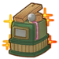
Procesadora de madera gigante
X
Objetos de la habilidad de Siega
"Utilice la hoz para cortar hierbas silvestres. Al cortar la hierba también obtendrá materiales herbáceos utilizables".
La siega se refiere a la habilidad del jugador de cortar la hierba silvestre, que luego se utiliza para cosechar hierba. Esta habilidad se incrementa al usar la hoz en la hierba silvestre de tu granja . A medida que tu habilidad de siega mejora, puedes obtener hasta seis materiales adicionales a la vez, lo que hace que sea mucho más fácil recolectar materiales de hierba.
Nivel Titulo Tecnicas obtenibles Recetas obtenibles 01 Segador novato — — 02 Aprendiz de segador Consigues 1 material más al cortar hierba. 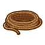
Cuerda
03 Segador principiante Consigues 2 material más al cortar hierba. 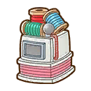
Hiladora
04 Segador con experiencia Cortar hierba consume menos energía.
Silla redonda
05 Segador hábil Consigues 3 material más al cortar hierba.
Topiaria de vaca
Lampara de pie sencilla
06 Segador de renombre Consigues 4 material más al cortar hierba. Topiaria de gallina
07 Segador superior Cortar hierba consume aún menos energía.
Topiaria de caballo
Silla cuadrada
08 Maestro Segador Consigues 5 material más al cortar hierba. Topiaria de oveja
09 Segador extraordinario Aumento de los beneficios al enviar hierba, hilo y tela. Mesa con sombrilla
10 Segador legendario Consigues 6 material más al cortar hierba.
Topiaria de alpaca
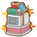
Hiladora gigante
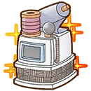
Telar gigante
X
Objetos de la habilidad de Minería
"Usa el martillo para romper rocas. La extracción de rocas también producirá minerales y joyas".
La minería se refiere a la capacidad del jugador para romper rocas y depósitos de minerales, que luego recolectan minerales, como rocas, gemas y minerales. Se incrementa usando el Martillo en rocas y vetas de mineral, que se encuentran tanto en tu granja como en las minas. Si te quedas sin energía demasiado rápido en las minas, intenta mejorar tu habilidad de Minería para disminuir tu consumo de energía. Esta habilidad se desbloquea al comienzo del juego.
Nivel Titulo Tecnicas obtenibles Recetas obtenibles
01 Minero novato —
Camino de piedra
Valla de piedra
Puerta de piedra
02 Aprendiz de minero Mejora ligera de la habilidad de extraer mineral. 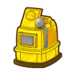
Procesadora de lingotes
03 Minero principiante Extraer minerales consume menos energía. Caja de objetos de piedra
04 Minero con experiencia Consigues 1 material más al extraer mineral.
Camino de hierro
Valla de hierro
Puerta de hierro
05 Minero hábil Mejora moderada de la habilidad de extraer mineral.
Caja de objeto de hierro
Carbón refinado
06 Minero de renombre Extraer mineral consume aún menos energía.
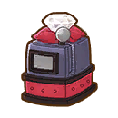
Procesadora de joyas
Lámpara redonda
07 Minero superior Consigues 2 material más al extraer mineral.
Farola espléndida
Farolillo de piedra
08 Maestro minero Mejora enorme de la habilidad de extraer mineral.
Banco de hierro
Espejo alto
09 Minero extraordinario Aumento de los beneficios al enviar minerales, joyas y lingotes.
Farola magnífica
Puerta de bienvenida
10 Minero legendario Consigues 3 material más al extraer mineral.
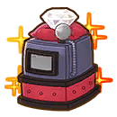
Procesadora de joyas gigante
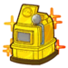
Procesadora de lingotes gigante
X
Objetos de la habilidad de Drenaje
"Usa el balde para sacar agua. Sacar agua producirá materiales como arcilla".
Drenar se refiere a la capacidad del jugador de sacar agua, que luego recolecta arcilla y revela el tesoro. Se aumenta usando el cubo en charcos o ciertos estanques. Puedes ganar mucha experiencia en drenaje drenando los grandes estanques en las Áreas 2 y 3; Haga funcionar varias bombas de succión a la vez para drenar el agua de manera más eficiente. Esta habilidad se desbloquea después de que Clemens le proporciona al jugador un cubo después de la primera lluvia.
Nivel Titulo Tecnicas obtenibles Recetas obtenibles 01 Drenador novato — 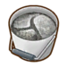
Cemento
02 Aprendiz de drenador —
Camino de cemento
Valla de cemento
Puerta de cemento
03 Drenador principiante Consigues 1 material más al drenar agua.
Caja de objetos de cemento
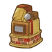
Procesadora de ladrillos
04 Drenador con experiencia Drenar agua consume menos energía.
Camino de ladrillo
Valla de ladrillo
Puerta de ladrillo
05 Drenador hábil — Bomba de extracción
06 Drenador de renombre Consigues 2 material más al drenar agua. — 07 Drenador superior Drenar consume mucha menos energía. — 08 Maestro drenador — 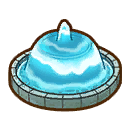
Fuente
09 Drenador extraordinario Aumento de los beneficios al enviar los tesoros. Cofre del tesoro
10 Drenador legendario Consigues 3 material más al extraer mineral. 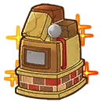
Procesadora de ladrillos gigante
X
Objetos de la habilidad de Pesca
"Usa la caña de pescar en los ríos y el océano. ¡Un día podrás conseguir una captura legendaria!".
La pesca se refiere a la capacidad del jugador para pescar todo tipo de peces en los rios, lagos, estanques u oceanos. Esta habilidad ira aumentando al usar la caña de pescar en una masa de agua y pescar con éxito un pez o capturar un pez usando una trampa para peces. Esta habilidad se desbloquea después de que Manuela le proporciona al jugador una caña de pescar cuando el jugador visite su casa.
Nivel Titulo Tecnicas obtenibles Recetas obtenibles 01 Pescador novato — Cebo de pescado pequeño
02 Aprendiz de pescador Mejora ligera de la habilidad de pesca. Cebo de calamar
03 Pescador principiante Pescar consume menos energía. Cebo de pescado mediano
04 Pescador con experiencia Mejora ligera de la calidad de pez atrapado. 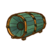
Red
05 Pescador hábil Mejora moderada de la habilidad para pescar. Cebo de gamba
06 Pescador de renombre Pescar consume mucha menos energía. Cebo de cangrajo
07 Pescador superior Mejora moderada de la calidad de pez atrapado.
Red multiusos
Cebo de pescado grande
08 Maestro pescador Mejora enorme de la habilidad para pescar. Cebo de guardián
09 Pescador extraordinario Aumento de los beneficios al enviar los pescados capturados. Red grande
10 Pescador legendario Mejora enorme de la calidad de pez atrapado. Cebo misterioso
X
Objetos de la habilidad de Agricultura
"Utilice la azada para labrar los campos y sembrar semillas. Se pueden cosechar cultivos completamente desarrollados".
El trabajo de campo se relaciona con la capacidad del jugador para labrar la tierra y sembrar cultivos. Se incrementa usando la azada en tierras de cultivo utilizables, usando semillas en tierras aradas, usando la regadera en suelo seco y cosechando cultivos.
En Trabajo de campo Lv. 4, el jugador desbloquea la capacidad de sembrar semillas en un cuadrado de 3x3 cargando Y mientras tiene semillas equipadas. En Trabajo de campo Lv 9, Ángela visitará la granja del jugador a la mañana siguiente (excepto durante un tifón o una tormenta de nieve) para anunciar que nuevos productos en la tienda general han aumentado significativamente. Esta habilidad se desbloquea después de que Víctor le enseña al jugador cómo sembrar cultivos en el segundo día del juego.
Nivel Titulo Tecnicas obtenibles Recetas obtenibles 01 Cosechador novato — — 02 Aprendiz de cosechador Mejora ligera de la calidad de los cultivos. — 03 Cosechador principiante La agricultura consume menos energía. —
04 Cosechador con experiencia Permite sembrar semillas a distancia.
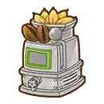
Pulverizadora
05 Cosechador hábil — 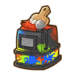
Procesadora de tintes
06 Cosechador de renombre Mejora moderada de la calidad de los cultivos. Semillera
07 Cosechador superior La agricultura consume bastante menos energía. 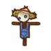
Espantapájaros
08 Aspersor mejorado Mejora enorme de la calidad de los cultivos. Aspersor mejorado
09 Cosechador extraordinario La agricultura consume mucho menos energía. 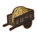
Carretilla
10 Cosechador legendario Aumento de los beneficios al enviar las cosechas.
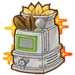
Pulverizadora gigante
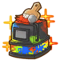
Procesadora de tintes gigante
Semillera gigante
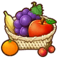
Fruticultura
X
Objetos de la habilidad de Fruticultura
"Plante plántulas y coseche cultivos de árboles. Los árboles tardarán algún tiempo en crecer".
La jardinería se refiere a la capacidad del Jugador de plantar y cosechar huertos. Se incrementa al recolectar cultivos de los árboles. En comparación con la habilidad Trabajo de campo, es mucho más difícil adquirir experiencia en la habilidad Huerto, así que invierte tu tiempo en ella desde el principio. Esta habilidad se desbloquea después de que Víctor le enseña al jugador cómo sembrar cultivos en el segundo día del juego.
Nivel Titulo Tecnicas obtenibles Recetas obtenibles 01 Fruticultor novato — — 02 Aprendiz de fruticultor Mejora ligera de la calidad de cultivos arbóreos. — 03 Fruticultor principiante — — 04 Fruticultor con experiencia Mejora moderada de la calidad de cultivos arbóreos. — 05 Fruticultor hábil — — 06 Fruticultor de renombre Mejora enorme de la calidad de cultivos arbóreos. Procesadora de plántulas
07 Fruticultor superior — 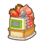
Procesadora de mermelada
08 Maestro fruticultor Aumento de los beneficios al enviar cultivos arbóreos. — 09 Fruticultor extraordinario — —
10 Fruticultor legendario Obtención de 1 más de cultivos arbóreos.
Procesadora de plántulas gigante
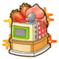
Procesadora de mermelada gigante
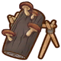
Cultivos de setas
X
Objetos de la habilidad de Cultivos de setas
"Coloca esporas en troncos de hongos. Los hongos se pueden cosechar después de unos días".
Cultivar se refiere a la capacidad del jugador de cultivar y cosechar hongos en un troncos productor de setas. Cultivar hongos de alto valor es muy lucrativo, al igual que la capacidad de mejorar la calidad de estos hongos. Esta habilidad se desbloquea después de que el jugador repara un troncos productor de setas que esta en ruinas.
Nivel Titulo Tecnicas obtenibles Recetas obtenibles 01 Cultivador novato — — 02 Aprendiz de cultivador Mejora ligera de la calidad de las setas. — 03 Cultivador principiante Cultivar setas consume menos energía. — 04 Cultivador con experiencia Mejora moderada de la calidad de las setas. — 05 Cultivador hábil Cultivar setas consume algo menos energía. — 06 Cultivador de renombre — Procesadora de esporas
07 Cultivador superior Mejora enorme de la calidad de las setas. — 08 Maestro cultivador Cultivar setas consume mucha menos energía. — 09 Cultivador extraordinario Aumento de los beneficios al enviar setas cultivadas. — 10 Cultivador legendario Obtención de 1 más de seta de los cultivos. Procesadora de esporas gigante
X
Objetos de la habilidad de Apicultura
"Coloca una flor en una colmena. Podrás cosechar la miel en unos días".
La apicultura se refiere a la capacidad del jugador de recolectar panales de miel de las colmenas. Poner flores en la colmena es la forma más eficiente de cultivar miel. Cada flor equivalen a un tipo de miel diferente. Esta habilidad se desbloquea después de que el jugador repara la colmena en ruinas.
Nivel Titulo Tecnicas obtenibles Recetas obtenibles 01 Apicultor novato — — 02 Aprendiz de apicultor Mejora ligera de la calidad de las colmenas. — 03 Apicultor principiante — 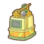
Procesadora de miel
04 Apicultor con experiencia La apicultura consume menos energía. — 05 Apicultor hábil Mejora moderada de la calidad de las colmenas. — 06 Apicultor de renombre La apicultura consume bastante menos energía. — 07 Apicultor superior Mejora enorme de la calidad de las colmenas. — 08 Maestro apicultor La apicultura consume mucha menos energía. — 09 Apicultor extraordinario Aumento de los beneficios al enviar colmenas y miel. — 10 Apicultor legendario Obtención de 1 más de colmena de miel. 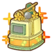
Procesadora de miel gigante
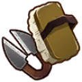
Cuidado de animales
X
Objetos de la habilidad de Cuidado de animales
"Cuide adecuadamente a su ganado y ellos le proporcionarán subproductos".
El cuidado de animales se refiere a la capacidad del jugador para cuidar y criar el ganado. Al interactuar con los animales a diario y recoger la leche, lana y pelo la habilidad Cuidado de animales mejorará y desbloqueará la capacidad de domesticar nuevos tipos de animales. Esta habilidad se desbloquea después de que el jugador doma a su primer animal.
Nivel Titulo Tecnicas obtenibles Recetas obtenibles Ganado nuevo 01 Criador novato — Balas de forraje
—
02 Aprendiz de criador
Acelera ligeramnete la amistad de los animales.
La felicidad de los animales crece más rapido.
Mayonesera
—
03 Criador principiante Aumento ligero de la variedad de ganado. Yogurtera
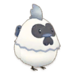
Gallina sedosa
04 Criador con experiencia
Acelera moderada de la amistad con animales.
La felicidad del animal crece algo más rápido.
Mantequera
Procesadora de lana
—
05 Criador hábil
Aumento moderada de la variedad de ganado.
Uso del set de cría habilitado.
Quesera
Tejedora
Alfombra chica
06 Criador de renombre
Acelera bastante la amistad con animales.
La felicidad del animal crece mucho más rápido.
Dispensador automatico
Alfombra de mosaico
—
07 Criador superior Se puede criar todo tipo de ganado.
Tanques de leche gigantes
Alfombra adorable
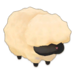
Oveja Suffolk
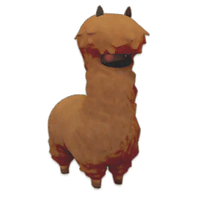
Alpaca marrón
08 Maestro criador
Acelera mucho la amistad con los animales.
La felicidad del animal crece aún más rápido.
Sofá relajante
Sofá casual
Peluche misterioso
—
09 Criador extraordinario Aumento de los beneficios al enviar producto animal.
Procesadora de lana gigante
Tejedora gigante
Mayonesera gigante
—
10 Criador legendario Obtención de 1 más de producto animal.
Quesera gigante
Mantequera gigante
Yogurtera gigante
—
X
Objetos de la habilidad de Cocina
"Utiliza ingredientes y prepara algo sabroso en la cocina. ¡Comer restaura la energía!".
Cocinar se refiere a la capacidad del jugador para cocinar. Aumentar esta habilidad no sólo aumentará la calidad de los platos, sino también la variedad de recetas que el jugador puede preparar. Aumenta cuando el jugador cocina algo usando una cocina. La calidad de los platos que elaboras tiene un gran impacto. Puedes mejorar aún más la calidad de la comida usando aderezos cuando esté desbloqueado.
En Cocina Lv. 5, el jugador puede aprender recetas comiendo platos cocinados, incluidos los que pide en el Café y Bistro. Esta habilidad se desbloquea cuando el jugador actualiza su hogar de un campamento a una cabaña de troncos.
Nivel Titulo Tecnicas obtenibles Recetas obtenibles 01 Chef novato — — 02 Aprendiz de chef Mejora ligera de la calidad de los platos. — 03 Chef principiante — 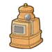
Procesadora de condimentos
04 Chef con experiencia — 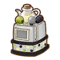
Procesadora de aliños
05 Chef hábil Puedes aprender recetas al comer platos. — 06 Chef de renombre Mejora moderada de la calidad de los platos. — 07 Chef superior Puedes añadir aderezos en los platos. — 08 Maestro chef — — 09 Chef extraordinario — —
10 Chef legendario Mejora enorme de la calidad de los platos.
Procesadora de condimentos gigante
Procesadora de aliños gigante
X
Objetos de la habilidad de Comunicación
"Habla y hazte amigo de los residentes de la ciudad. ¡La amistad es su propia recompensa!"
La comunicación se refiere a la cantidad de amistad que se gana al hablar con los NPC. Se aumenta una vez al día al hablar con los NPC y al darles regalos. Los efectos de esta habilidad no siempre se notan de inmediato, pero tendrán un impacto en cada saludo y regalo a los residentes. Esta habilidad se desbloquea al comienzo del juego.
Nivel Titulo Tecnicas obtenibles Recetas obtenibles 01 Nuevo en el pueblo — — 02 Conocido — Anillo enjoyado
03 Sociable Acelera ligeramente el avance de una amistad. — 04 Amigo de todos — Medallón enjoyado
05 La comidilla del pueblo — 06 Celebridad local Acelera moderada el avance de una amistad. — 07 Mascota local — Pulsera a la moda
08 Consejero del pueblo Acelera bastante el avance de una amistad. — 09 Pionero de la ciudad* — Reloj brillante
10 Minero legendario* — Procesadora de esencias gigante
Eventos de habilidades
Estos eventos ocurren despues de haberte completado las condiciones nesesaria sobre la habilidad correspondiente del jugador, pero no todas las habilidades tienen un evento.
Evento de la habilidad de Tala
X
Evento de la habilidad de Tala
Ubicacion Tu casa Hora 06:00 am - 05:59 pm
Clima
Requisito
No ha ocurrido ningún otro acontecimiento ese día.
El nivel de habilidad de Tala es de 9 o superior.
Extra
Ocurre el día después de que se cumplen todas las condiciones.
Se desbloquea el área especial "Montaña del Leñador" .
Evento de la habilidad de Siega
X
Evento de la habilidad de Siega
Ubicacion Tu casa Hora 06:00 am - 05:59 pm
Clima
Requisito
No ha ocurrido ningún otro acontecimiento ese día.
El nivel de habilidad de Siega es de 9 o superior.
Extra
Ocurre el día después de que se cumplen todas las condiciones.
Se desbloquea el área especial "Colina verde" .
Evento de la habilidad de Minería
X
Evento de la habilidad de Minería
Ubicacion Tu casa Hora 06:00 am - 05:59 pm
Clima
Requisito
No ha ocurrido ningún otro acontecimiento ese día.
El nivel de habilidad de Minería es de 9 o superior.
Extra
Ocurre el día después de que se cumplen todas las condiciones.
Se desbloquea el área especial "Valle Rompepiedras" .
Evento de la habilidad de Pesca
X
Evento de la habilidad de Pesca
Ubicacion Tu casa Hora 06:00 am - 05:59 pm
Clima
Requisito
No ha ocurrido ningún otro acontecimiento ese día.
El nivel de habilidad de Pesca es de 9 o superior.
Extra
Evento de la habilidad de Agricultura
X
Evento de la habilidad de Agricultura
Ubicacion Tu casa Hora 06:00 am - 05:59 pm
Clima
Requisito
No ha ocurrido ningún otro acontecimiento ese día.
El nivel de habilidad de Agricultura es de 9 o superior.
Extra
Ocurre el día después de que se cumplen todas las condiciones.
Las semillas de ajo, sandía, bok choy y col china se desbloquean en el bazar de ciudad Oliva
Evento de la habilidad de Cuidado de animales
X
Evento de la habilidad de Cuidado de animales
Ubicacion Tu casa Hora 06:00 am - 05:59 pm
Clima
Requisito
No ha ocurrido ningún otro acontecimiento ese día.
El nivel de habilidad de Cuidado de animales es de 9 o superior.
Extra
Ocurre el día después de que se cumplen todas las condiciones.
La Vaca Negra y el Conejo Rosa ya están disponibles en la tienda de animales .
Evento de la habilidad de Cocina
X
Evento de la habilidad de Cocina
Ubicacion Tu casa Hora 06:00 am - 05:59 pm
Clima
Requisito
No ha ocurrido ningún otro acontecimiento ese día.
El jugador a complatado todas las solicitudes de cocina de Lovett.
Extra
Ocurre el día después de que se cumplen todas las condiciones.
El jugador recibe la receta de Onigiri.